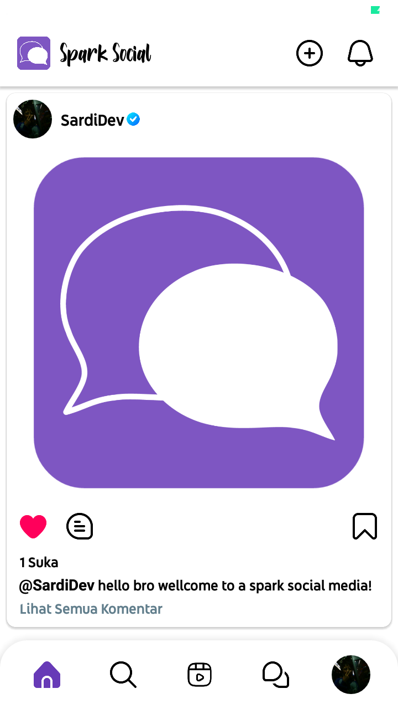
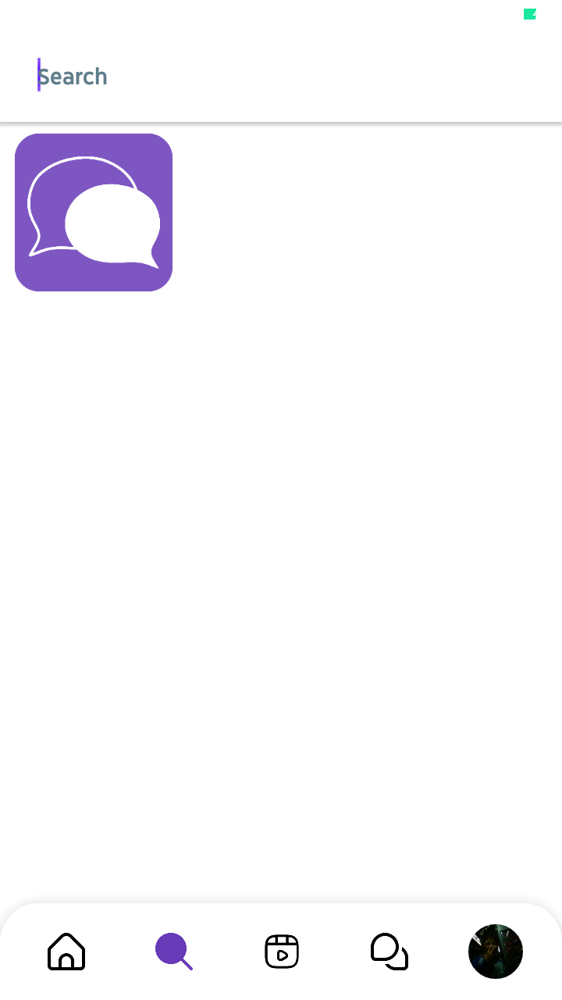
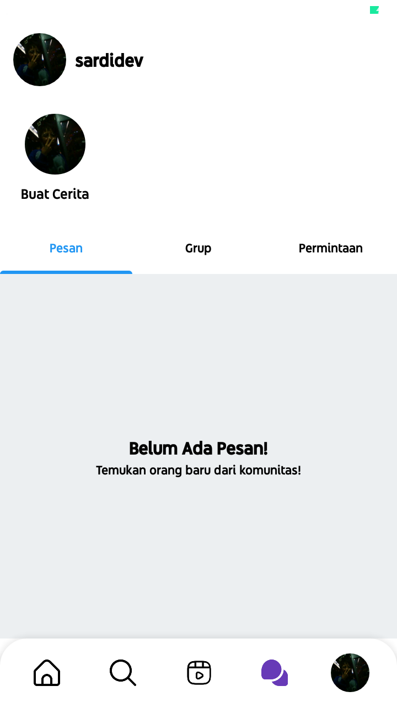
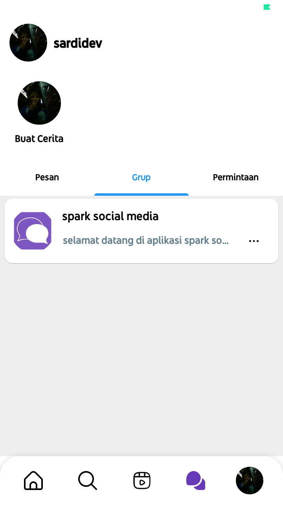
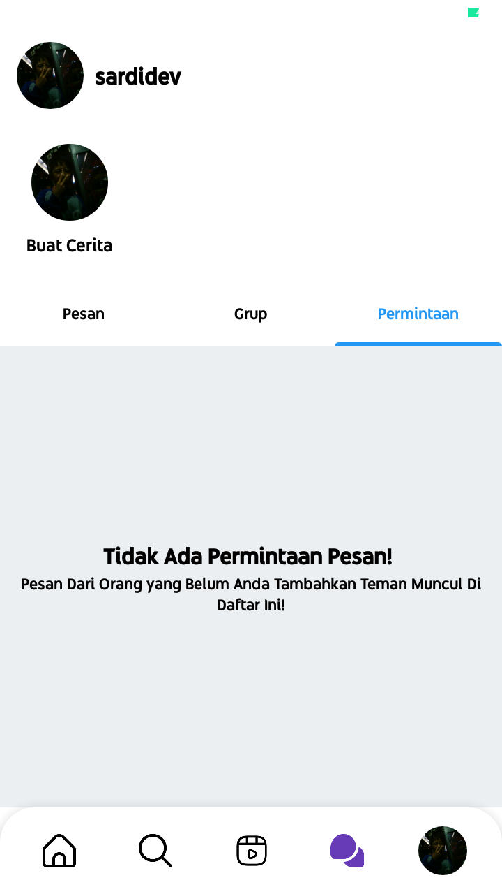
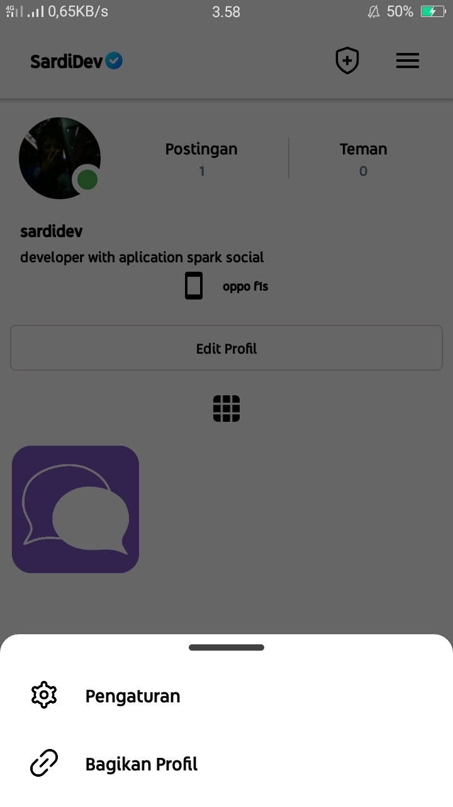
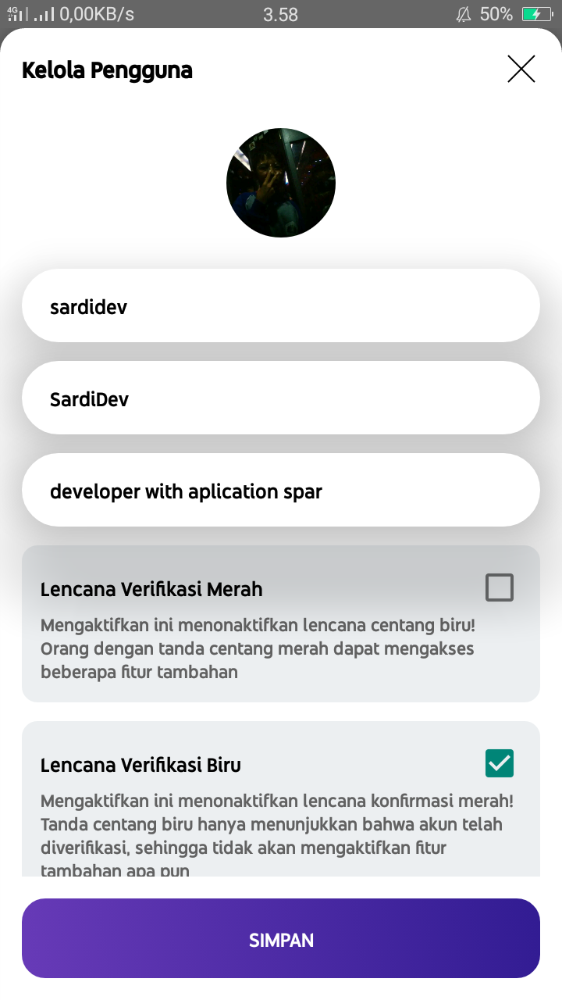

Spark Social Media
Selamat Datang!
selamat datang di spark social media, aplikasi social media (sosmed) indonesia. Kamu dapat menikmati semua fitur yang ada di dalam aplikasi!Tentang Aplikasi
Tujuan Aplikasi ini hanya untuk menjalin silaturahmi melalui media online. Kamu dapat berteman dan berkomunikasi dengan orang yang ada di indonesia. Aplikasi ini aman untuk digunakan, sama halnya seperti sosmed pada umumnya. Cuma yang membedakannya adalah. Aplikasi ini servernya Asia. jadi negara atau kota Yang termasuk dalam kategori Asia bisa mengakses aplikasi ini, seperti: singapura, thailand, india, dan lain-lain
Kebijakan Privasi untuk Spark Social Di Spark Social, salah satu prioritas utama kami adalah privasi pengunjung kami. Dokumen Kebijakan Privasi ini berisi jenis informasi yang dikumpulkan dan dicatat oleh Spark Social dan bagaimana kami menggunakannya. Jika Anda memiliki pertanyaan tambahan atau memerlukan informasi lebih lanjut tentang Kebijakan Privasi kami, jangan ragu untuk menghubungi kami.
File Log
Spark Social mengikuti prosedur standar menggunakan file log. File-file ini mencatat pengunjung saat mereka menggunakan aplikasi. Informasi yang dikumpulkan oleh file log termasuk alamat protokol internet (IP), jenis browser, Penyedia Layanan Internet (ISP), stempel tanggal dan waktu, halaman rujukan/keluar, dan mungkin jumlah klik. Ini tidak terkait dengan informasi apa pun yang dapat diidentifikasi secara pribadi. Tujuan dari informasi tersebut adalah untuk menganalisis tren, mengelola aplikasi, melacak pergerakan pengguna di aplikasi, dan mengumpulkan informasi demografis.
Mitra Iklan Kami
Beberapa pengiklan di aplikasi kami mungkin menggunakan cookie dan suar web. Mitra periklanan kami tercantum di bawah ini. Setiap mitra periklanan kami memiliki Kebijakan Privasi sendiri untuk kebijakan mereka tentang data pengguna. Untuk akses yang lebih mudah, kami menautkan ke Kebijakan Privasi mereka di bawah ini.
https://policies.google.com/technologies/ads
Kebijakan Privasi
Anda dapat berkonsultasi dengan daftar ini untuk menemukan Kebijakan Privasi untuk masing-masing mitra periklanan Spark Social. Server iklan atau jaringan iklan pihak ketiga menggunakan teknologi seperti cookie, JavaScript, atau Beacon yang digunakan dalam iklan masing-masing dan tautan yang muncul di Spark Social. Mereka secara otomatis menerima alamat IP Anda saat ini terjadi. Teknologi ini digunakan untuk mengukur keefektifan kampanye iklan mereka dan/atau untuk mempersonalisasi konten iklan yang Anda lihat di aplikasi ini atau aplikasi atau situs web lain. Perhatikan bahwa Spark Social tidak memiliki akses atau kontrol terhadap cookie yang digunakan oleh pengiklan pihak ketiga ini.
Kebijakan Privasi Pihak Ketiga
Kebijakan Privasi Spark Social tidak berlaku untuk pengiklan atau situs web lain. Karenanya, kami menyarankan Anda untuk berkonsultasi dengan Kebijakan Privasi masing-masing dari server iklan pihak ketiga ini untuk informasi lebih rinci. Ini mungkin termasuk praktik dan instruksi mereka tentang cara menyisih dari opsi tertentu.
Informasi Anak
Bagian lain dari prioritas kami adalah menambahkan perlindungan untuk anak-anak saat menggunakan internet. Kami mendorong orang tua dan wali untuk mengamati, berpartisipasi, dan/atau memantau dan membimbing aktivitas online mereka. Spark Social tidak dengan sengaja mengumpulkan Informasi Identifikasi Pribadi apa pun dari anak-anak di bawah usia 13 tahun. Jika menurut Anda anak Anda memberikan informasi semacam ini di Aplikasi kami, kami sangat menganjurkan Anda untuk segera menghubungi kami dan kami akan melakukan upaya terbaik kami untuk segera menghapus informasi tersebut dari catatan kami.
Hanya Kebijakan Privasi Daring
Kebijakan Privasi ini hanya berlaku untuk aktivitas online kami dan berlaku untuk pengunjung Aplikasi kami sehubungan dengan informasi yang mereka bagikan dan/atau kumpulkan di Spark Social. Kebijakan ini tidak berlaku untuk informasi apa pun yang dikumpulkan secara offline atau melalui saluran selain aplikasi ini. Kebijakan Privasi kami dibuat dengan bantuan Pembuat Kebijakan Privasi Aplikasi
Izin
Dengan menggunakan aplikasi kami, Anda dengan ini menyetujui Kebijakan Privasi kami dan menyetujui Syarat dan Ketentuannya.
-- Tampilan Aplikasi --








Download App version 0.3.0 (BETA) Android 5/6
Download App version 0.3.0 (BETA) Android 9/10/11